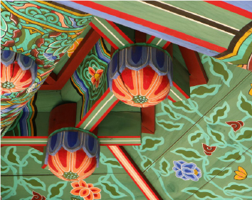
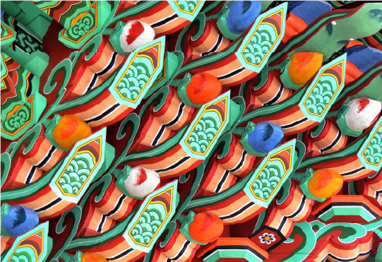

단청의 뜻
단청의 뜻
목조건물에 여러가지 빛깔로 무늬를 그려 장신한 것으로 단벽이라고도 한다. 기능적으로 비바람에 나무가 썩지 않도록 막아주는 역할을 한다. 당청은 오행설에 근거하여 청/적/황/백/흑을 기본으로 하여 일정한 규칙에 따라 문양을 그려 넣는다. 그리고 단청의 한자 뜻 그대로 풀이하면 붉은 색과 푸른색의 대비와 조화라는 의미로 이해될 수 있지만 일반적인 ‘단청’의 의미는 안료를 사용하여 건축물의 부재에 칠하는 모든 일을 뜻한다.

넓은 의미
단청의 의미에는 조각과 공예품 등을 채색하는 것과 글, 그림의 개념까지 포함된다. 예전부터 왕실에서는 나라의 길흉에 관한 의식이나 종교적, 신앙적인 의례를 행하는 건물과 그릇 등을 엄숙하게 꾸며서 일반 잡기와 구분해 두었다. 고대로부터 남겨진 탑이나 신상, 비석 등과 무덤의 벽화, 무덤에서 출토된 각종 부장품 등에 장식된 문양도 큰 틀에서의 단청과 같은 목적을 갖는다고 할 수 있다. 역사적으로 단청의 영역은 목조건축 뿐 아니라 석조 건축, 조형물, 공예품, 고분의 벽화와 불화 등에 채화하는 모든 행위를 망라하는 것이었다.
단청의 일반적인 의미
오늘날 우리가 알고 있는 일반적 의미의 단청은 건축물의 벽, 기둥, 천장 등의 부재에 그림이나 문양 등으로 다채롭게 치장하는 것을 일컫는다. 단청의 대상이되는 사찰 건축이나 궁궐 건축은 예배의 대상을 모시는 성전이며 군주의 권위와 위풍을 나타내는 건축물인 만큼 화려하고 격조 있게 장식 했다. 건물의 내부는 물론 외부의 세부 부재에 이르 기까지 정성을 들여 종교적 상징을 드러내거나 왕실의 위엄을 드높이는 수단이 되었다. 단청은 여러 상징적인 의미를 가지는 문양을 시각화하여 그 시대의 생활과 신앙, 관습과 관념을 표현하는 행위라고 할 수 있다.
단청의 발달

청색·적색·황색·백색·흑색 등 다섯 가지 색을 기본으로 사용하여 건축물에 여러 가지 무늬와 그림을 그려 장식하는 장식미술로 조각품이나 고분, 동굴 등에 채화하는 것이다.
목조 건축의 발달은 본격적인 단청의 시작을 가져왔다. 인류는 자연 환경에서 쉽게 구할 수 있는 목재를 이용하여 주거지를 마련했고, 정착 생활을 하면서 문명형성의 기틀을 마련하게 된다. 그들은 목재를 가공. 조립해 사용하기 시작하면서 건축물의 수명 연장이라는 난관에 부딪힌다. 한국, 중국 일본 등지에서 건축재로 가장 많이 사용되는 소나무는 단단하며, 쉽게 재질이 변형되거나 휘어지지 않는 장점이 있지만 표면이 거칠고 건조 후 열상이 크다는 단점이 있다. 이렇듯 쉽게 부식되고 갈라지는 목재의 단점을 보완하기 위해 ‘단청칠’을 하게 된 것이다.
단청은 과거의 인류가 남긴 미적 행위에서 비롯되었다. 과거 인류는 원시 시대부터 동굴에 그림을 그리거나 일상의 도구에 각종 문양을 장식했다. 또한 그들이 이해하지 못하는 무형의 신비한 힘을 비롯한 맹수, 맹금, 해충의 침해로부터 자신들을 보호하기 위한 수단으로 몸에 칠을 하기도 했다. 인류의 이러한 행위는 양식화 된 단청이 존재하기 이전의 미적 감수성을 반영한다. 그들의 행위는 일정 부분 장식적 기능까지 갖추고 있었다. 단청이 발달되기 시작하면서 점차 건축물의 성격과 분위기를 드러내며, 당시의 미의식이 반영된 문양으로 ‘장식적 아름다움’까지 표현하게 된다.
목조 건축의 발달은 본격적인 단청의 시작을 가져왔다. 인류는 자연 환경에서 쉽게 구할 수 있는 목재를 이용하여 주거지를 마련했고, 정착 생활을 하면서 문명형성의 기틀을 마련하게 된다. 그들은 목재를 가공. 조립해 사용하기 시작하면서 건축물의 수명 연장이라는 난관에 부딪힌다. 한국, 중국 일본 등지에서 건축재로 가장 많이 사용되는 소나무는 단단하며, 쉽게 재질이 변형되거나 휘어지지 않는 장점이 있지만 표면이 거칠고 건조 후 열상이 크다는 단점이 있다. 이렇듯 쉽게 부식되고 갈라지는 목재의 단점을 보완하기 위해 ‘단청칠’을 하게 된 것이다.
단청은 과거의 인류가 남긴 미적 행위에서 비롯되었다. 과거 인류는 원시 시대부터 동굴에 그림을 그리거나 일상의 도구에 각종 문양을 장식했다. 또한 그들이 이해하지 못하는 무형의 신비한 힘을 비롯한 맹수, 맹금, 해충의 침해로부터 자신들을 보호하기 위한 수단으로 몸에 칠을 하기도 했다. 인류의 이러한 행위는 양식화 된 단청이 존재하기 이전의 미적 감수성을 반영한다. 그들의 행위는 일정 부분 장식적 기능까지 갖추고 있었다. 단청이 발달되기 시작하면서 점차 건축물의 성격과 분위기를 드러내며, 당시의 미의식이 반영된 문양으로 ‘장식적 아름다움’까지 표현하게 된다.
단청의 기록
고려시대에는 일반 가옥에도 채색을 할 정도로 단청은 발달했었다. 단청의 수요가 늘면서 조선시대에는 안료를 수입했는데 승정원 일기에는 명나라에서 안료를 수입했는데 매년 비축량이 많아 사오지 않겠다는 기록이 있다. 하지만 수입 안료는 값이 너무 비싸 차라리 우리나라의 안료로 칠하자는 의견도 있었다. 세종때는 안료를 직접 만들기 위해 박서생이 일본에 가서 원서를 사고 안료 만드는 법을 배워오기도 했다.
고려사(유승단편)
사신도
고구려 고분 벽화
솔거조
탑상조
충혜왕 5년
법주사
이수신편
세병관
승정원일기
광해군일기

세종실록


단청의 아름다움은 한순간에 만들어진 것이 아니다.